1.前言
1.1 Linux内核
1.1.1 简介
Linux 是全球最受欢迎的开源操作系统。它是一个由 C 语言编写的，符合 POSIX 标准 的类 UNIX 系统。
- POSIX： 是 Portable Operating System Interface 的缩写，表示可移植操作系统接 口，它规定了操作系统应该为应用编程提供的接口标准。
- UNIX：是一个强大的多用户、多任务分时操作系统，支持多种处理器架构，于 1969 年在 AT&T 的贝尔实验室开发。UNIX 是商业操作系统，需要收费。
Linux 遵循 GPL 协议，允许任何人对代码进行修改或发行，包括商业行为。只要其遵守 该 GPL 协议，所有基于 Linux 的软件也必须以 GPL 协议的形式发表，并提供源代码。
- GPL：是 GNU General Public License 的缩写，非正式中文翻译为“GNU 通用公共许 可证”。只有 GPL 英文原版才具有法律效力。 在软件中采用了使用 GPL 协议的产品，该软件产品也必须采 用 GPL 协议，即必须开源，这是 GPL 所谓的“传染性”。
获取 Linux 内核源码的网址为：http://www.kernel.org，在这里能够 下载各版本的内核源码，包括测试版和最新稳定版。 Linux 的吉祥物是一只名叫 Tux 的企鹅，看起来像穿了一件晚礼服 的企鹅。
Linux 吉祥物创作于 1996 年，据说 Linus 被澳大利亚国家动物园的一只小企鹅轻轻咬 了一下，于是就有了用企鹅做吉祥物的想法。
1.1.2 特点
1.Linux内核的重要特点
- Linux 是一个一体化内核；(“一体化内核”是也称“宏内核”，是相对于“微内核”而言的。几乎所有 的嵌入式和实时系统都采用微内核，如 VxWorks、uC/OS-II、PSOS 等。)
- 可移植性强。尽管 Linus 最初只为在 X86 PC 上实现一个“类 UNIX”，后来随 着加入者的努力，Linux 目前已经成为支持硬件平台最广泛的操作系统；(目前已经在 X86、IA64、ARM、MIPS、AVR32、M68K、S390、Blackfin、M32R 等众多架构处理器上运行。)
- 是一个可裁剪操作系统内核。Linux 极具伸缩性，内核可以任意裁剪，可以大至 几十或者上百兆，可以小至几百 K，运行的设备从超级计算机、大型服务器到 小型嵌入式系统、掌上移动设备或者嵌入式模块，都可以运行；
- 模块化。Linux 内核采用模块化设计，很多功能模块都可以编译为模块，可以在 内核运行中动态加载/卸载而无需重启系统；
- 网络支持完善。Linux 内核集成了完整的 POSIX 网络协议栈，网络功能完善；
- 稳定性强。运行 Linux 的内核的服务器可以做到几年不用复位重启；
- 安全性好。Linux 源码开放，由众多黑客参与 Linux 的开发，一旦发现漏洞都能 及时修复；
- 支持的设备广泛。Linux 源码中，设备驱动源码占了很大比例，几乎能支持任何 常见设备，无论是很老旧的设备还是最新推出的硬件设备，几乎都能找到 Linux 下的驱动。
2.Linux操作系统的特点
以 Linux 内核为核心的操作系统具有如下特点：
- 开放性：遵循世界标准规范，特别是遵循开放系统互连（OSI）国际标准。凡遵循国际标准所开 发的硬件和软件，都能彼此兼容，可方便地实现互连。
- OSI 是 Open System Interconnection 的缩写，意为开放系统互联，该模型由 ISO （国际标准化组织）制定。模型把网络通信分为 7 层：物理层、数据链路层、网络层、 传输层、会话层、表示层和应用层。
- ISO 是 International Organization for Standardization 的缩写，即国际标准 化组织，该组织是由国家标准化机构组成的世界范围的联合会，现有 140 个成员国。ISO 中央办事机构设在瑞士的日内瓦。
- 多用户：Linux 操作系统是一个真正的多用户操作系统；系统资源可以被不同用户各自拥有使用， 即每个用户对自己的资源有特定的权限，互不影响。(经常有初学者将 Linux 的多用户与 Windows 的多用户弄混淆，实际上两者的差别是 很大的。Windows 桌面同一时刻只允许一个用户登录，其余用户必须锁定；而 Linux 则允许多个用户同时登录。)
- 多任务：多任务是现代计算机的最主要的一个特点。它是指计算机同时执行多个程序，而且各个 程序的运行互相独立。Linux 系统调度每一个进程平等地访问处理器。(多任务实际上很常见，例如我们在编写文档的时候，还可以一边听歌，甚至还可以 从网上下载资料。这至少就有文档处理、音乐播放和网络下载三个任务，相互互不 影响，并且是同时运行的。)
- 良好的用户界面：Linux 向用户提供了两种界面：用户界面和系统调用。
- Linux 的传统用户界面是基于文本的命令行界面，即 Shell，它既可以联机使用，又 可存在文件上脱机使用。Shell 有很强的程序设计能力，用户可方便地用它编制程 序，从而为用户扩充系统功能提供了更高级的手段。
- Linux 还为用户提供了图形用户界面。它利用鼠标、菜单、窗口、滚动条等设施， 给用户呈现一个直观、易操作、交互性强的友好的图形化界面。
- 系统调用是提供给用户编程时使用的界面。用户可以在编程时直接使用系统提供的 系统调用。系统通过这个界面为用户程序提供低级、高效率的服务。
- 设备独立性：Linux 操作系统把所有外部设备统一当作成文件来看待，只要安装它们的驱动程序，任 何用户都可以像使用文件一样，操纵、使用这些设备，而不必知道它们的具体存在形式。 Linux 的设备独立性使得它具有高度适应能力，能够适应随时增加支持新设备。
- 设备独立性主要是对应用程序开发者来说的。例如，对应用开发者来说，系统自带的串口与 USB 串口的操作方式是一样的，都是串口设备，而不用关心这个串口设备 实际对应的物理硬件是什么。
- 完善的网络功能：Linux 内置完整的 POSIX 网络协议栈，在通信和网络功能方面优于其它操作系统。Linux 为用户提供了完善的、强大的网络功能；
- 支持 Internet。Linux 免费提供了大量支持 Internet 的软件，使得用户能用 Linux 与 世界上的其他人通过 Internet 网络进行通信。
- 网络文件传输。用户能通过一些 Linux 命令完成内部信息或文件的传输。
- 远程访问功能。Linux 系统既允许本身通过网络访问远程的系统，也允许远程系统 通过网络访问自身。
- 可靠的系统安全：Linux 采取了许多安全技术措施，包括对读、写进行权限控制、带保护的子系统、审计 跟踪、核心授权等，为网络多用户环境中的用户提供了必要的安全保障。
- 模块化：运行时可以根据系统的需要加载程序而无需重启系统。Linux 的模块化极大地提高了 Linux 的可裁剪性和灵活性。
- 良好的可移植性：Linux 是一种可移植的操作系统，能够在从微型计算机到大型计算机的任何环境和任何 平台上运行。目前已经成为支持平台最广泛的操作系统。(Linux 内核移植分 3 个层次：体系结构级别移植、处理器级别移植和板级移植。对 大多数开发者而言，只需进行板级移植。)
1.1.3 内核版本号
Linux 内核版本由 Linus 所领导的内核开发小组控制，版本号有严格规定。 Linux 内核版本号通常由 3 个数字组成，以 2.6.28 为例，2 为主版本号，6 为次版本号， 28 为修订号。次版本号为偶数则表示这是一个稳定版本，如 2.6.17，为奇数则表示是一个开 发版本，有可能是不稳定的，如 2.5.6。 另外，还可能见到如 2.6.27.8 这样的版本号，末尾的.8 表示这是 2.6.27 版本的第 8 个升 级版本，也是可用的稳定版本。
1.1.4 组成部分
Linux 内核由 5 个主要子系统组成，分别是：内存管理、进程管理、进程间通信、虚拟 文件系统和网络，各子系统之间的关系如图
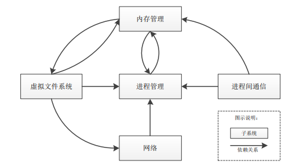
进程管理
进程管理负责控制进程对 CPU 的访问，如任务的创建、调度和终止等。任务调度是进 程管理最核心的工作，由 Linux 内核调度器来完成。Linux 内核调度器根据一定算法来选择 最值得运行的进程。
进程状态：
- 运行态——已经获得了资源，并且进程正在被 CPU 执行。进程既可运行在内核 态，也可运行在用户态。
- 内核态，内核和驱动所运行时的状态，程序处于特权阶级，能够访问系统的任 何资源，好比社会的统治者。
- 用户态，用户程序运行的状态，处于非特权阶级，不能随意访问系统资源，必须通过驱动程序方可访问，用户态程序可通过系统调用进入内核态。用户态程 序有如社会的被统治者，处于被管理的非特权阶级，只有通过某种途径才能进 入特权阶级。
- 就绪态——当系统资源已经可用，但由于前一个进程还没有执行完而释放 CPU， 准备进入运行状态。
- 可中断睡眠状态——当进程处于可中断等待状态时，系统不会调度该程序执行。 当系统产生一个中断或者释放了进程正在等待的资源，或者进程收到一个信号， 都可以被唤醒进入就绪状态或者运行态。
- 不可中断睡眠状态——处于中断等待状态，但是该进程只能被使用 wake_up() 函数明确唤醒的时候才可进入就绪状态。
- 暂停状态——当进程收到 SIGSTOP、SIGSTP、SIGTTIN 或者 SIGTTOU 就会进 入暂停状态，收到 SIGCONT 信号即可进入运行态。
- 僵死态——进程已经停止运行，但是其父进程还没有询问其状态。
各种状态转化关系和条件如图：
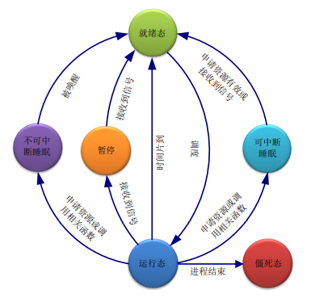
进程和状态的转换有点抽象，用生活中一个比较接近的例子类比一下，或许能有助于理 解。Linux 内核调度器好比是生产线的主管，而进程则好比是生产线上的工人。主管 24 小 时不间断的工作，工人的工作时间是朝九晚五，其余时间在等待区排队等候。
早上工人到达工厂，还没到 9 点上班时间，工人可以在等待区休息，这个状态可以称之 为“就绪态”；但是 9 点一到，工人则必须上生产线工作，这个工作状态可称之为“运行态”； 下午 5 点一到，到了工人下班时间，工人离开生产线又回到等待区排队等候，处于“就绪态”。
如果工人上班的时候，收到主管的命令，说是“你暂时不用工作了，到休息室休息等待”， 工人此时的这个状态，可以称之为“暂停”状态，过了一段时间，主管通知工人说是“休息 结束，要准备工作了”，工人不能直接回生产线岗位，而是必须先到等待区排队等待，轮到后才上生产线工作。
如果有一天工人精神状态不好，向主管申请要睡觉休息，理由可以是“某种配件不到，我无法工作”，也可以是“我就是困了，想睡觉”，工人最后可能得到两种批准结果：一是主管批准了，但是附加了一个条件说“等我叫醒你，你必须醒来上班”，然后工人就去享受他的安稳觉了，工人进入“不可中断睡眠”状态；另一种是主管也批准了，但是附加了另一个 条件，说“在你睡觉的时候，如果配件到了，你就得立马给我起来上班”，工人也去睡觉去了，但此时工人睡得并不安心，因为这不是一个安稳觉，是“可中断睡眠”。无论工人睡得 是安稳觉，还是不安稳觉，醒来都不能直接上生产线，而是回到等待区，等待轮值。
还有一种情况，工人干完活到点下班了，但主管对他不闻不问，也不安排新的工作，这 是一种非正常状况，工人进入了“僵死态”。
内存管理
内存管理的主要作用是控制和管理多个进程，使之能够安全的共享主内存区域。当 CPU 提供内存管理单元（MMU）时，内存管理为各进程实现虚拟地址到内存物理地址的转换。 在 32 位系统上，Linux 内核将 4G 空间分为 1G 内核空间（3
4G）和 3G（03G）用户空间， 通过内存管理，每个进程都可以使用 3G 的用户空间。文件系统
Linux 内核支持众多的逻辑文件系统，如 Ext2、Ext3、Ext4、btrfs、NFS、VFAT 等。 VFS 则是 Linux 基于各种逻辑文件系统抽象出的一种内存中的文件系统，隐藏了各种硬件设 备细节，为用户提供统一的操作接口，是用户访问各种不同文件系统和设备时，不用区分具 体的逻辑文件系统。例如，Linux 下硬盘上使用的文件系统通常是 Ext3/4 格式，而 U 盘通常 是 FAT32 格式，但是用户在使用中根本感觉不到差异，也不用区分文件系统的具体差别。
网络接口
Linux 对网络支持相当完善，网络接口提供了对各种网络标准的存取和各种网络硬件的 支持，接口可分为网络协议和网络驱动程序。网络协议部分负责实现每一种可能的网络传输 协议。网络设备驱动程序负责与硬件设备通讯，每一种可能的硬件设备都有相应的设备驱动 程序。
进程间通信
支持进程间各种通信机制，如管道、命名管道、信号、消息队列、内存共享、信号量和套接字等。
- 管道通常用于具有亲缘关系的父子进程或者兄弟进程间通信，是半双工的，数据只能往一个方向流动，先入先出，与自来水管很相似。如果双方互通时，需要建立两个管道。
- 命名管道则突破了进程间的亲缘关系限制，即非父子、兄弟进程之间也可相互通信。
- 信号是软件中断，用于在多个进程之间传递异步信号。日常生活中信号的例子很多了，如一对很亲密的哑巴情侣，在很多时候只需要一个简单的眼神，对方就能知道 他（她）需要什么，并做出回应，这个眼神，就是一个“信号”。
- 信号能传递的信息有限，而消息队列则正好弥补了这点。例如情侣的一个眼神，对 方可能能知道情侣的需求，但是如果情侣有一大堆需求，仅仅靠一个眼神就比较费 力了。情侣就把自己的需求写在了一张纸条上，递交给对方，对方根据纸条的内容， 逐一满足情侣的需求。
- 共享内存常用于不同进程间进行大量数据传递。Linux 下每个进程都有自己的独立 空间，各自都不能直接访问其它进程的空间。好比这对情侣都有自己的小金库，有 时候需要给对方一部分钱用，但他们不能直接相互转账，必须先将前存到他们俩合 开的一个公共账户上面，然后再使用。这个公共账户就是这对情侣的“共享内存”。
- 信号量用于进程同步。只有获得了信号量的进程才可以运行，没有获得信号量的进程则只能等待。就像十字路口的红绿灯，只有在绿灯亮（获得了绿灯）的时候才能 通行，否则只能等待。
- 套接字（Socket）起源于 BSD，也常称“BSD 套接字”，用于多个进程间通信，可以 基于文件，也可基于网络。Socket 本意是“插座”，套接字设计就是通过某些参数 设定，然后将一个“插座”与另外一个“插座”连接起来。可能还有点抽象，看一 个例子可能就好理解了。把套接字理解为固定电话的插口，现在要打电话出去，必 须要知道打给谁，往哪里打；另外电话另一端必须有人在听才可以通话，否则也不 能打电话。
1.2Linux发行版
由 Linus 主持开发的 Linux 仅仅是一个内核，提供硬件抽象层、磁盘及文件系统控制、多任务等功能，并不是一个完整的操作系统。一套基于 Linux 内核的完整操作系统叫作 Linux 操作系统，也称 GNU/Linux。据不完全统计，目前大大小小应用于不同场合的 Linux 发行版 已经超过 400 余种，桌面/服务器上常见的也就十来种，如 Redhat、Mandriva、Fedora、SuSe、 Debian、Ubuntu 等。
一个完整的Linux 发行版，是以Linux 内核为基础，外加众多外围应用程序和文档组成，一个典型的 GNU/Linux 发行版基本系统结构如图所示。不同软件厂商发布的 Linux 发 行版各自包含的外围软件也不一样，发布版的镜像大小差别也很大。
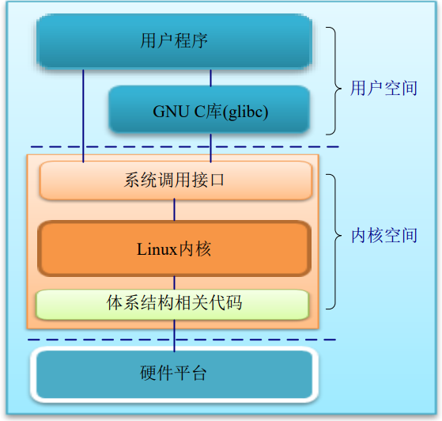
Linux 内核为一些软件厂商提供了内核，促使了发行版的诞生；发行版的流行使得 Linux 更加广为人知，并吸引更多的黑客参与 Linux 应用开发，甚至内核开发，促进了内核的快速 发展。不同发行版之间功能定位、用户群体都有差异，几乎每个发行版都拥有相当大数量的 固定的用户群或者忠实追随者。Linux 社区各大发行版之间的争论一直没有停止过，甚至有 时候还有不同发行版用户之间的口水战，但是这并不妨碍 Linux 内核的发展。
Linux 发行版的版本号是发行厂商自定义的代号，与 Linux 内核版本号没有任何直接关 系，并且各发行版的命名规则也各不相同，如 Fedora 20、Ubuntu 14.04 等。常见的 Linux 发 行版有：
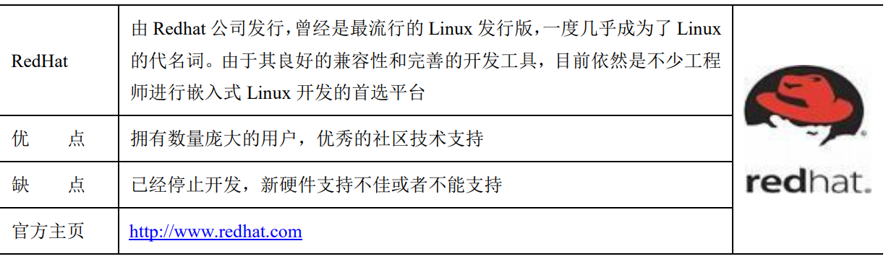
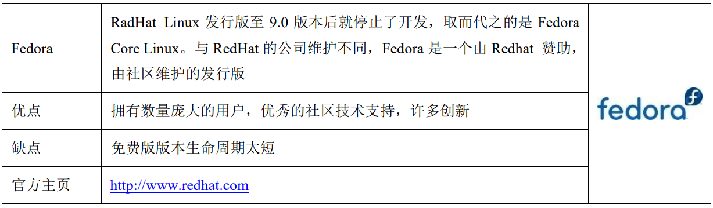
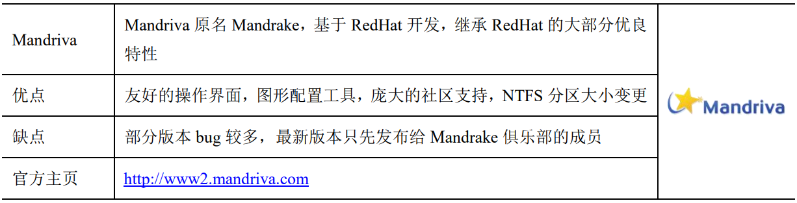
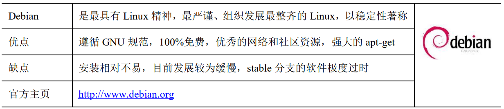
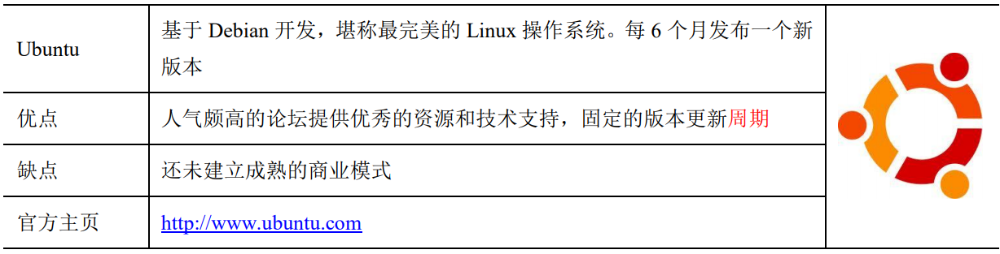
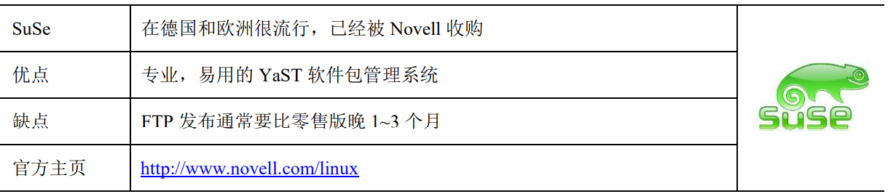
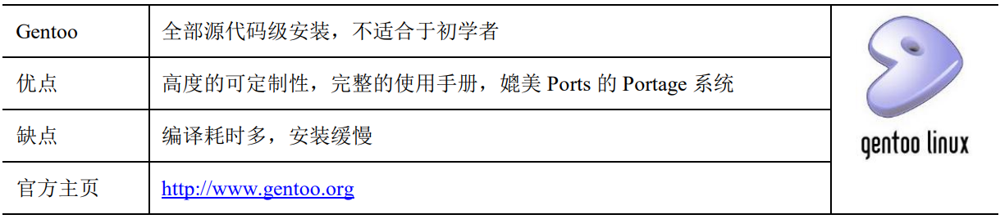
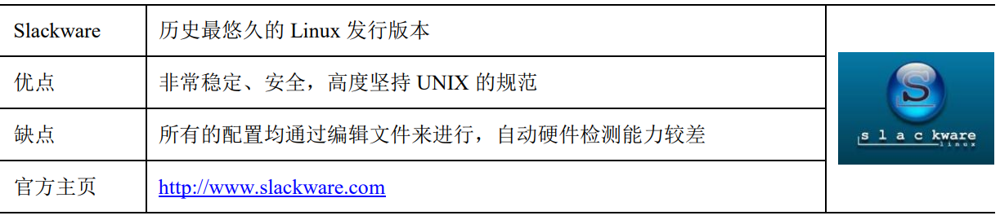
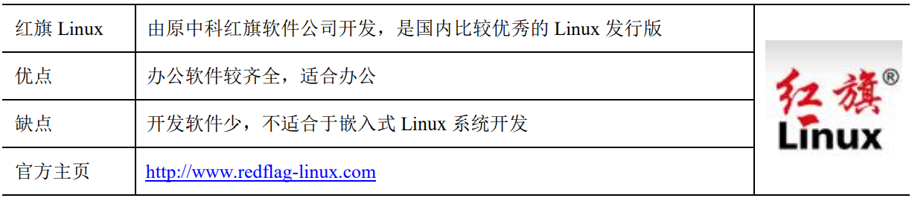
1.3 嵌入式Linux
1.3.1 嵌入式Linux的特点
嵌入式 Linux 是对运行在嵌入式设备上的 Linux 的统称，严格说来，每种不同应用的嵌 入式 Linux 都可以称为是一个发行版。嵌入式 Linux 往往针对于某个特殊领域，专门为实现 某些特定的功能而开发，一般说来，嵌入式 Linux 所运行的程序相对来说比较单一，功能定 位也比较明确，如嵌入式网关、路由器等。
将标准 Linux 应用到嵌入式领域，往往是根据实际需要裁减内核，内核一般从几百 K 到几兆字节不等。所使用的文件系统也不是桌面 Linux 这样复杂庞大的软件包，一般也是用 源码或者其它工具定制，文件系统的大小也可以从几兆到几十兆，或者上百兆不等。
Linux 在嵌入式领域的分化，一般是两个方向，小型化和实时化。
小型化一般就是根据需要将不需要的功能和服务去掉，尽可能的减小内核和系统的体积， 以节省硬件资源和成本，如 ETLinux、uLinux、ThinLinux 等。
实时化一般是通过修改源代码，为 Linux 内核增加比校准内核更好的实时性，以满足一 些对实时性有要求的特定领域的应用，如 RTLinux、RTAI 等。
1.3.2嵌入式Linux的产品形态
与其它嵌入式系统产品一样，嵌入式 Linux 产品在物理形态上与普通 Linux 设备有很大 差异，不同产品之间物理形态也是各不相同。与桌面 Linux 相比，嵌入式 Linux 产品往往没有硕大的显示器，或者鼠标键盘这样的外设。
嵌入式 Linux 产品既可以作为一个独立形态的产品出现，如手持机、交换机、路由器等， 也有可能以某种特殊功能设备的形式出现，通过某种通信接口参与系统集成，例如协议转换器，或者甚至以电路板或者模块的形式出现在某种设备的电路板上，如嵌入式工业交换机模 块。无论如何，它们的共性都是运行了经过高度裁剪的、具备特定功能的嵌入式 Linux 操作系统。图列举了生活中一些常见的嵌入式 Linux 产品。
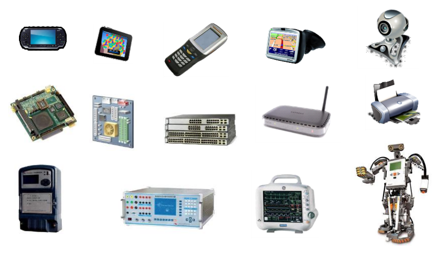
无论最终产品以何种形态出现，在开发阶段，串口和网口几乎是必不可缺的外设接口。 嵌入式 Linux 的默认终端通常是调试串口，系统输出信息通过串口输出，也通过串口接收各 种命令。而网口则常用于数据传输和程序调试，特别是在内核开发阶段以及应用程序开发阶 段，网络几乎也是必须的。
2. 安装Linux操作系统
2.1简述三种方式
学习 Linux，必须先获得一个 Linux 主机环境，通常情况下，可以通过以下三种方式获 得 Linux 环境。
- 双系统安装
- 如果没有闲置的计算机，或者现有 Windows 系统的计算机有足够的硬盘空间，可以考 虑划分一部分硬盘空间，用于安装 Linux 操作系统，最终形成双系统计算机。
- 优点：经济实惠，且对计算机硬件要求不太高。
- 缺点：安装双系统比较危险，一不小心有可能造成整个硬盘数据丢失；在开发过程使 用到 Windows 工具时，需进行系统切换，不是很方便。
- 全新硬盘安装
- 如果有足够的计算机可用，可以选择一台计算机全新安装 Linux 操作系统。
- 优点：不用考虑多系统并存的问题，且对计算机硬件硬件要求不太高。
- 缺点：在嵌入式开发过程中，通常还会用到 Windows 下的工具，还需另外一台计算机 安装 Windows 系统。
- 安装虚拟机
- 如果计算机配置较高，可以考虑虚拟机方案。在 Windows 下安装虚拟机软件，然后通 过虚拟机软件创建一台虚拟电脑，最后在虚拟电脑中安装 Linux 操作系统；也可以安装 Linux， 在 Linux 中安装虚拟机再安装 Windows。
- 常用的虚拟机软件有 VMware、Virtual Box 和 Virtual PC 等，不同虚拟机软件的使用方 法稍有不同。下文以 VMware 为例进行介绍。
- 优点：安装和使用 Linux 都很方便；还可同时使用 Windows 系统。
- 缺点：对计算机硬件要求高，特别是内存，推荐 4GB 及以上。 在 Windows 下使用虚拟机，除了可以继续使用 Windows 下的工具之外，还有下列好处：
- 一台电脑可以同时存放多台虚拟机，这样就可以存在多个不同版本的 Linux 系统；
- 在硬件允许的情况下，甚至可以同时运行多台虚拟机；
- 安装好的虚拟机可以任意复制和拷贝，方便在不同电脑之间迁移和扩散。
2.2 发行版本选择和ISO下载
首先要考虑该发行版的流行度，越流行的发行版，用户越多，遇到问题寻求技术支持也 很方便，如果选择小众的发行版，寻求技术支持就不那么方便了。
其次要考虑该发行版使用的难易程度，通常来说，越简单易用的发行版越流行。
进行嵌入式 Linux 开发，还必须考虑嵌入式 Linux 开发工具的问题。最好选择处理器半 导体厂商以及开发平台厂商所选择的发行版，这样能够直接使用半导体或者开发平台原厂提 供的各种工具，减少开发过程中的障碍。
基于以上 3 个理由，我们选择了 Ubuntu 发行版，下面的安装和使用都以 Ubuntu 为例进 行介绍。Ubuntu 本身又有很多版本，我们选择的确切版本是 Ubuntu 12.04.5，是目前来说最 适合于嵌入式 Linux 开发的 Ubuntu LTS（长期支持）版本
Ubuntu 12.04 下载地址：www.ubuntu.com/download/alternative-downloads
建议选择 Desktop 版本，到底是 32-bit 版本还是 64-bit 版本，需要根据计算机硬件来定，在硬件允许的情况下，推荐选择 64-bit 版本。
下载 ISO 文件后，如果进行虚拟安装，则可以直接使用 ISO 文件；如果进行物理实体 安装，则可将 ISO 刻成启动光盘，或者用 unetbootin-windows 软件制作成 USB 启动盘备用。
用从 Ubuntu 官网下载的 ISO 镜像，安装后只能得到纯净的 Ubuntu 系统，如果从 www.zlg.cn/linux 下载经过重新打包的 Ubuntu 镜像，安装后将会得到已经构建好嵌入式 Linux 开发环境的 Ubuntu 系统。
2.3 VMware Player软件
2.3.1 下载和安装
打开VMware官方网站(www.vmware.com)，进入下载专区，下载非商用的VMware Player 软件。在下载页面中选择下载 VMware Player for Windows 32-bit and 64-bit 软件。
文件下载完成后，得到 VMware-player-6.0.2-1744117.exe 程序安装文件（具体文件名以 实际下载到的文件为准）。双击该程序安装文件，在弹出的对话框中选择“下一步”，直至安装完成即可。
2.3.2 设置虚拟化支持
对于大多数 PC 而言，主板设置默认支持虚拟化，无需进行这步操作，但是对于一些笔 记本电脑，默认关闭了虚拟化支持，需要使能才能正常使用虚拟机。
设置虚拟化支持，需要进入系统 BIOS 进行操作。不同品牌的笔记本进入 BIOS 的方法 也存在差异，有的是在刚启动时持续按 F2 键进入 BIOS，有的是 F10 键，具体请参考对应 品牌电脑的主板说明。
当进入 BIOS 系统，找到 Intel Virtualization Technology 选项，将其配置为 Enable，不同 PC 的 BIOS 中对应的选项位置及描述可能不同，请以实际情况为准。
设置好虚拟化支持后，保存并退出 BIOS，重启电脑。
2.4 使用现成的虚拟机
前面已经提到过，虚拟机可以在不同电脑之间迁移和扩散。如果觉得安装 Linux 操作系 统麻烦，或者暂时不想安装，可以直接使用已经安装好的虚拟机镜像。打开 http://www.zlg.cn/linux，下载已经安装好的 Ubuntu 12.04 虚拟机镜像，存放到有足够空闲空 间（建议 40GB 以上）的硬盘解压，将得到我们已经安装好的虚拟机。
下载页面同时提供了 64 位和 32 位虚拟机文件，请根据计算机硬件具体情况选择：32 位处理器的计算机只能使用 32 位镜像；而对于 64 位处理器的计算机，无论安装了 32 位还 是 64 位操作系统，都可以任意选择。
打开 WMware Player 软件，点击“打开虚拟机”，选择打开已有的虚拟机。
安装过程就不多赘述了，详细可以百度，这里只提几点设置
虚拟网卡三种模式
- 桥接模式：在这种模式下，VMWare 虚拟出来的操作系统就像是局域网中的一台独立的主机，它可 以访问网内任何一台机器。在桥接模式下，虚拟系统和宿主机器的关系，就像连接在同一个 Hub 上的两台电脑。 用户需要手工为虚拟系统配置 IP 地址、子网掩码，而且还要和宿主机器处于同一网段，这 样虚拟系统才能和宿主机器进行通信。同时，由于这个虚拟系统是局域网中的一个独立的主 机系统，那么就可以手工配置它的 TCP/IP 配置信息，以实现通过局域网的网关或路由器访问互联网。
- 在进行嵌入式 Linux 开发，要目标板通过 NFS 挂载虚拟机的 NFS 共享目录的话，必 须将虚拟网卡配置为桥接模式。
- NAT 模式 ：使用 NAT 模式，就是让虚拟系统借助 NAT（网络地址转换）功能，通过宿主机器所在 的网络来访问公网，也就是说，使用 NAT 模式可以实现在虚拟系统里访问互联网。NAT 模 式下的虚拟系统的 TCP/IP 配置信息是由 VMnet8(NAT)虚拟网络的 DHCP 服务器提供的，虚 拟机无法正常对主机所连网络中的其它主机提供普通的网络服务，如 TFTP、NFS 和 FTP 等。 采用 NAT 模式最大的优势是虚拟系统接入互联网非常简单，用户不需要进行任何其它 的配置，只需要宿主机器能访问互联网即可。
- 仅主机模式：在某些特殊的网络调试环境中，要求将真实环境和虚拟环境隔离开，这时用户就可采用 仅主机（Host-Only）模式。在 Host-Only 模式中，所有的虚拟系统是可以相互通信的，但虚 拟系统和真实的网络是被隔离开的。
2.5 初识Ubuntu
2.5.1 Ubuntu桌面
Ubuntu 启动后，进入桌面系统，在桌面的右上角显示的是输入法、时间、登录用户名的信息。
桌面的左侧是任务栏。在任务上，可以看到 Ubuntu 为用户准备了一些常用的软件：
- 火狐浏览器，上网用
- 文件浏览器，用于浏览计算机上的文件
- 文档处理处理软件，类似 Windows Office 的 Word 软件
- 表格处理软件，类似 Windows Office 的 Execl 软件
- 演示文稿软件，类似 Windows Office 的 PowerPoint
- 软件中心，为用户提供海量的软件下载、安装
- 系统设置
2.5.2 打开终端
在 Dash 的搜索输入框输入“terminal”，即可搜索到终端程序。在实际应用中，并不需 要写全，输入前面即可字母，系统就能自动列出相关软件，如输入“te”，即可出现包含终 端在内的程序。
点击终端图标即可打开终端的窗口。按“Ctrl+Alt+T”组合键也可以打 开终端窗口。终端窗口的大小，可以由用户用鼠标拖伸，或最大化。
按“Ctrl+Shift+T”键可以在终端窗口再打开一个终端的标签。按“Alt+1” 或“Alt+2”切换终端标签。
2.5.3 安装软件
在 Ubuntu 一般使用 apt-get 命令安装软件。但前提是电脑需要连接到互联网。apt-get 命 令在执行时会在网上下载指定的软件包，然后完成安装。
例如，安装 vim 的方法是：
$ sudo apt-get install vim若要卸载安装好的 vim 方法是：
$ sudo apt-get remove vim当然也可以通过软件中心来下载。
3.1 Linux Shell
3.1.1 Shell是什么？
前面已经提到过，Linux 系统为用户提供了多种用户界面，包括 Shell 界面、系统调用 和图形界面。其中 Shell 界面是 UNIX/Linux 系统的传统界面，也可以说是最重要的用户界 面，无论是服务器、桌面系统还是嵌入式应用，都离不开 Shell。
Shell，英文本意是外壳，Linux Shell 就是 Linux 操作系统的外壳，为用户提供使用操作 系统的接口，是 Linux 系统用户交互的重要接口。登录 Linux 系统或者打开 Linux 的终端， 都将会启动 Linux 所使用的 Shell。
Linux Shell一个命令解释器，是 Linux 下最重要的交互界面，从标准输入接收用户命令， 将命令进行解析并传递给内核，内核则根据命令，作出相应的动作，如果有反馈信息，则输 出到标准输出上，示意过程如图所示。嵌入式 Linux 的标准输入和输出都是串口终端。
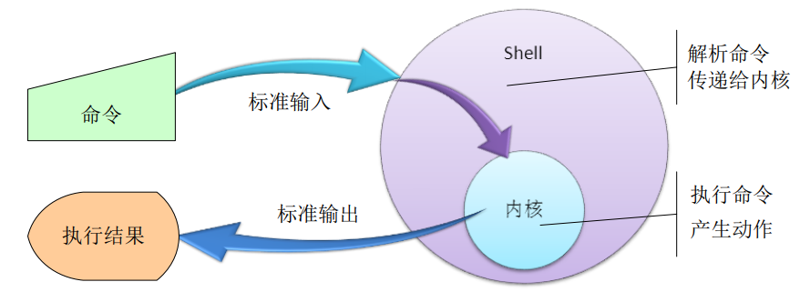
Shell 既能解释自身的内建命令，也能解释外部命令，如系统某个目录下的可执行程序。 Shell 首先判断是否是自己的内建命令，然后再检查是不是系统的应用程序，如果不是内建 命令，在系统也找不到这个应用程序，则提示错误信息，如果找到了应用程序，则应用程序 调入系统调用时陷入内核。
Shell 也是一种解释型的程序设计语言，并且支持绝大多数高级语言的程序元素，如变 量、数组、函数以及程序控制等。Shell 编程简单易学，任何在 Shell 提示符中输入的命令都 可以放到一个可执行的 Shell 程序文件中。Shell 文件其实就是众多 Linux 命令的集合，也称 为 Shell 脚本文件。
3.1.2 Shell的种类和特点
Linux Shell 有多种 Shell，比较通用且有标准的主要分为两类：Bourne Shell（sh）和 C Shell （csh），各自包括几种具体的 Shell。
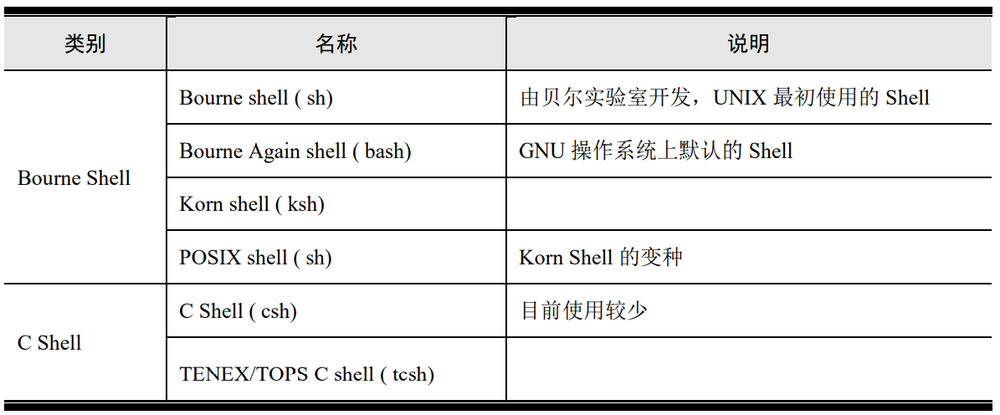
Bourne Shell 是 UNIX 最初使用的 shell，在每种 UNIX 上都可以使用。Bourne Shell 的 优点是在 Shell 编程方面很好，缺点是用户的交互不如其他几种 Shell。
Bourne Again Shell 简称 Bash，是 Bourne Shell 的扩展，与 Bourne Shell 完全向后兼容， 在 Bourne Shell 的基础上增加了很多新特性。Bash 提供了命令补全、命令编辑和命令历史表 等功能，还包含了很多 C shell 和 Korn shell 中的优点，使用灵活，界面友好，编程方便，是 GNU/Linux 操作系统的默认 Shell。
Korn Shell 由 AT&T 的 Bell 实验室 David Korn 开发，吸收了所有 C Shell 的交互式特性， 并融入了 Bourne shell 的语法，与 Bourne shell 完全兼容。
C Shell 由 Bill Joy 在 BSD 系统上开发，增强了用户交互功能，并将编程语法变成了 C 语言风格，还增加了命令历史、别名、文件名替换、作业控制等功能。
在不同发行版中，所采用的默认 Shell 也有所不同，如 Redhat 和 Fedora 中默认 Shell 为 bash，Ubuntu 中用了 dash。无论用哪种 Shell，登录系统后系统将运行一个 Shell 进程。根据 不同用户，Shell 提供不同的命令提示符，root 用户的提示符为“#”，普通用户的命令提示 符为“$”，在命令提示符下输入命令即可与系统进行交互。
尽管不同发行版的默认 Shell 有可能不同，但是所采用的 Shell 一般都具有如下特性：
- 具有内置命令可供用户直接使用；
- 支持复合命令：把已有命令组合成新的命令；
- 支持通配符（*、?、[]）
- 支持 TAB 键补齐；
- 支持历史记录；
- 支持环境变量；
- 支持后台执行命令或者程序；
- 支持 Shell 脚本程序；
- 具有模块化编程能力，如顺序流控制、条件控制和循环控制等；
- Ctrl+C 能终止进程。
3.2 Linux常见命令
对进行嵌入式 Linux 开发经常会用到的一些操作和相关命令，进一步加深对 Linux 的了解。命令是 Linux 最重要的人机交互界面之一，学习和掌握 Linux 命令是学习 Linux 不 可逾越的阶段。在 Shell 下，一些命令加上一些参数，或者几个简单命令进行组合，可以完 成在图形界面下需要经过复杂操作才能完成的功能。“简单就是美”在 Linux 的命令中得到 了很好的体现。
Linux 的命令通常会有很多选项和参数，但日常操作中用到的都不多，在这里也仅仅择 取常用的进行介绍，更多或者完整的 Linux 命令请参考 Linux 命令手册或者其它资料。在接 触具体的命令之前，先对 Linux 命令的特点做一个概括，也是使用 Linux 命令的一些注意事项：
- 大多数命令都有各种参数和选项；
- 大多数命令的参数可以组合使用（相斥参数除外）；
- 用“命令 –help”或者“man 命令”可以获取相应命令的详细用法；
- 命令/工具不同版本所支持的参数可能会有所差异；
- 命令区分大小写，包括参数；
- Shell 支持 TAB 键命令补齐，输入命令开头字母，按 TAB 键能补齐命令。
3.2.1 导航命令
打开 Linux 的虚拟终端后，一般都停在用户主目录下。当前目录下有什么？如何进入到 其它目录？进入其它目录后，如何才能知道当前的确切位置？像这类操作通常称之为导航。 Linux 下，能帮助进行导航的命令有 3 个：ls、cd 和 pwd。
查看当前目录的内容：打开 Linux 虚拟终端后，查看当前目录下的内容，查看当前目录下有什么文件和目录，然后再进行其它操作。查看当前目录下的内容的命令式 ls， 简单的输入 ls 就可以了
用法：
$ ls [选项]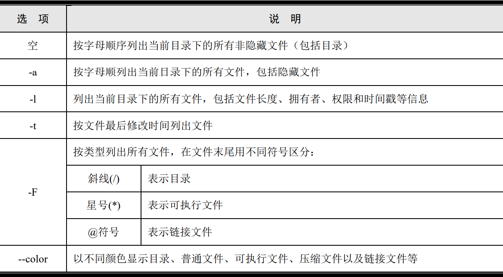
说明：
（1）Linux 区分大小写，在输入的时候需要特别注意；
（2）各参数可以任意组合，如 ls -la；
（3）支持通配符*、?等。注：在 Linux 下，隐藏一个文件只需将文件改名为点号（.）开始的文件名即可，而 Windows 下，通常需要修改文件属性。
切换工作目录：用法：
$cd 目标路径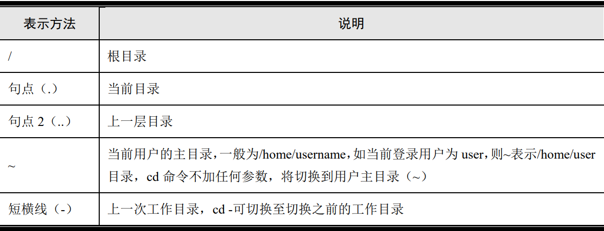
（1）Linux 下目录、计算机名和域名之间都是用斜线（/）分开，而非反斜线（\）；
（2）Linux 下切换目录，可用相对路径，亦可用绝对路径。
查看当前路径：用法很简单，在 Shell 终端中输入 pwd 即可
3.2.2 目录操作命令
创建目录：mkdir 用于创建一个或者多个目录，加上选项也可以创建多级目录，这样的快捷性是图 形界面无法做到的。用法：
$mkdir [选项] [参数] 目录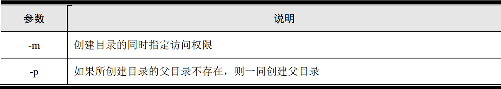
删除目录：如果一个目录不再需要，可以将其删除。Linux 下有两个命令可用于删除目录，rmdir 和 rm。
用 rmdir 删除空目录：rmdir 命令只能删除空目录，无法删除非空目录。rmdir 也支持参数-p，表示删除某个目录后，如果父目录也成了空目录，则连父目录一 并删除。
$rmdir dir
用 rm 命令删除：用 rmdir 命令很安全，不会误删数据，但是实际上用的不是很多，更常用的是用 rm 命 令。rm 命令既可以删除文件，也可以删除目录而不管目录是否非空。
$rm [选项] 文件/目录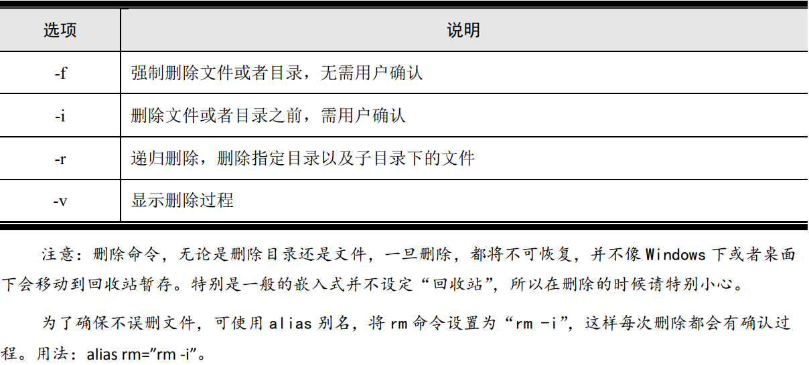
3.2.3 文件操作命令
创建空文件：touch 命令可以完成 这个功能能，创建的文件大小为 0，命令如下：
$ touch a创建一个有内容的文件：
Linux 下创建文件，可以使用文本编辑器如 vi 等来操作。对于简单的内容，可以用普通 命令来创建文件。用普通命令创建非空文件，需要用到 Linux Shell 重定向机制，首先来了 解一下重定向。
Linux Shell 终端启动的时候会打开 3 个标准文件：标准输入（stdin）、标准输出（stdout） 和标准错误（stderr）。Shell 从标准输入（通常是键盘）接收命令，命令执行结果信息打印 到标准输出（通常是终端屏幕）上，如有错误信息，则打印到标准错误（通常是终端屏幕） 上，如图
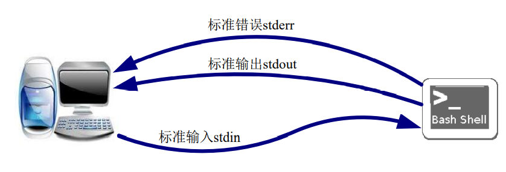
Shell 允许用户对输入输出进行重定向。输出重定向允许将输出信息从标准输出重定向 到其它文件上，也可以重定向到某个设备如打印机上。如图所示是将标准输出重定向到文件的示意图。
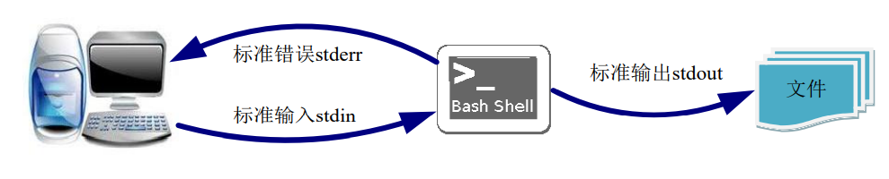
重定向在 Linux 下用“>”和“>>”表示，“>”表示输出到一个新文件中，而“>>”则 表示输出到现有文件的末尾。如果文件已经存在，则直接操作文件，否则将创建新文件。
echo 命令将内容回显到标准输出，使用 echo 命令加上重定向可以创建一个带内容的非 空文件，用法：
$echo 内容 或者 “内容” #输出到标准输出 $echo 内容 或者 “内容” > 文件 #重定向到文件，如果文件不存在则创建新文件回显内容如果不加引号，则用单空格替代多个连续空格，如果加了引号，则原封不动回显
可以看到，第一次输入的内容没有引号，连续空格被单空格替换了，而第二次加了引号， 连续空格依然保留。
查看文件类型：
在 Windows 下，文件都有标准扩展，基本上可以根据文件扩展名来识别和判断文件类 型，如.exe 是可执行文件，.c 是 C 代码文件、.zip 是压缩文件等。
Linux 与 Windows 不同，Linux 下的文件并没有标准扩展名，Linux 也不是根据扩展名 来识别文件，而是根据文件头来识别文件类型。
尽管在大多数 Linux 发行版中，默认情况下都能以不同颜色显示目录以及不同类型的文 件，但是根据颜色只能简单粗略判断常用类型文件。要准确确定一个文件的类型，必须依赖 于 file 命令。file 命令能读取文件头并识别文件类型，包括目录。用法：
$ file 文件说明：只能查看具有可读属性的文件。
file 命令还可以查看二进制可执行文件的详细信息，包括所运行的处理器体系结构。在 PC 机上用 gcc 编译得到的程序，用 file 命令查看：
vmuser@Linux-host: hello$ file hello hello.x86: ELF 32-bit LSB executable, Intel 80386, version 1 (SYSV), dynamically linked (uses shared libs), for GNU/Linux 2.6.9, not stripped而经过 arm-linux-gcc 交叉编译之后再次查看：
vmuser@Linux-host: hello$ file hello hello: ELF 32-bit LSB executable, ARM, version 1, dynamically linked (uses shared libs), for GNU/Linux 2.6.27, not stripped如果运行某个程序出现 cannot execute binary file 这的错误，很有可能是文件编译的目标 体系结构与当前所运行的体系结构不一致，可用 file 这样的命令进行确认。
查看文件内容
准确判断文件类型类型后，对于 ASCII 码文件，无需使用特殊软件仅仅用 Linux 的命令 就可以查看，如文本文件、C 代码文件、Shell 脚本文件等。Linux 下可以查看文件内容的命 令命令有好几个，如 more/less、head/tail、cat 等。
用 more 和 less 命令查看：more 和 less 两个命令都可用来浏览文本文件，可以分页查看文件内容，空格翻页。文 件浏览完毕，按键盘 q 退出。用法：
$more/less 文件相比来说 less 命令更加灵活，支持键盘的 Page Up 和 Page Down 键，可任意向前先后翻 页浏览，并且还支持文本搜索。使用 less 打开文件后，输入/abc 可在文本中搜索字符串 abc， 匹配的字符串高亮显示。
用 head/tail 命令查看：head 和 tail 这两个命令可分别查看文件头部和文件尾部，一般用于查看 ASCII 文件。默 认显示 10 行，可加上参数指定显示内容的多少，支持的参数如表所列。用法：
$head/tail [选项][参数] 文件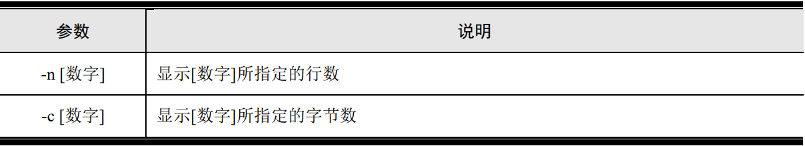
指定显示多少行：
$ head -n 20 install.cf指定显示多少字节：
$ head -c 300 install.cf
用 cat 命令查看：cat 命令可以将一个或者多个文件输出到标准输出上，可以用于文件查看。用法：
$ cat 文件
文件合并
cat 命令可以将一个或者多个文件输出到标准输出，如果将标准输出重定位到某个文件， 则将多个文件合并一个文件。用法：
$ cat [选项] 文件 1 文件 2 … [>文件 3]如果不加选项，则原封不动的显示各个文件，加上一些参数的话，可以对原文件进行一 些处理
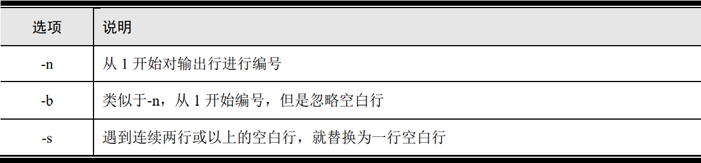
如果使用重定向符（>）可以将屏幕输出保存到另一个文件中，或者追加符（>>）可以 将屏幕输出添加到某个文件末尾。示例，将 hello.c 和 Makefile 文件增加行号后合并为 test 文件：
$ cat -n hello.c Makefile > test（1）重定向符（>）可以将标准输出重定向到其它输出或者文件，文件不存在则会创建新文件；
（2）追加符（>>）则将标准输出追加到文件末尾，如果文件不存在则创建新文件；
文件压缩/解压
tar 是 UNIX 系统的一个文件打包工具，只是连续首尾相连的将文件堆放起来，并不具 备压缩功能，但是加上选项，tar 可以调用其它压缩/解压工具，能够实现文件的压缩和解压。 用法：
$tar [选项] 文件tar 工具常用选项
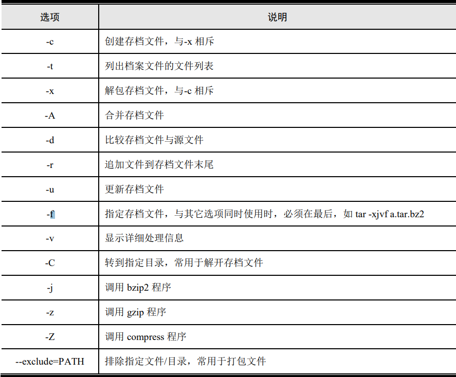
文件改名和移动
在 Linux 下，文件移动和改名都是通过 mv 命令实现的，且移动和改名可以同时实现。用法：
$mv 源文件/目录 目的文件/目录若目的路径与源路径不相同，则进行移动操作，如相同则进行改名操作。
讲删除命令的时候，提到删除的文件不会在回收站暂存，在通用桌面 Linux，一般都设有回收 站，在桌面下删除一般会暂存在回收站，在命令行下若要想将某个文件暂存回收站，只能用 mv 命令，将文 件移动到回收站中。Linux 下的回收站，一般在主目录下，为隐藏文件.Trash，不同发行版回收站的路径 也各不相同。Ubuntu 的回收站目录是“~/.local/share/Trash”。
Ubuntu 图形界面下的删除，实际上都是 mv 指令，将“删除”的文件移动到回收站，清空垃圾桶才是 用 rm 命令彻底删除。
文件复制
cp 命令用法：
$cp [选项] 源文件/目录 目的文件/目录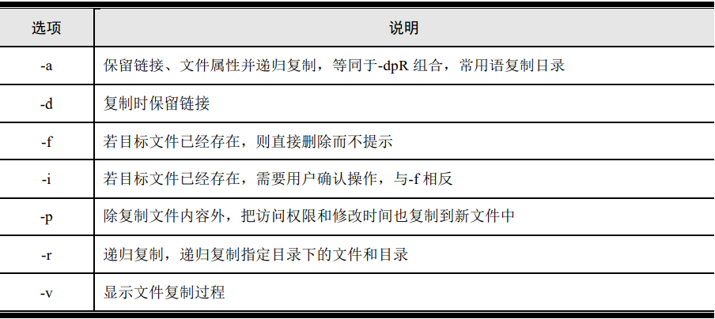
通过 cp 命令，可以在同一目录下将文件/目录复制为另外一个文件/目录，也可将文件/ 目录复制到其它目录，还可用其它文件名
创建链接
链接文件在 Linux 系统中很常见，特别是库文件目录以及/etc 下与启动级别相关的目录。 例如“/etc/rc5.d/S99rc.local”文件，实际上是链接到“/etc/init.d/rc.local”文件的一个软链接。
Linux 创建链接的命令为 ln，用法：
$ ln 选项 源文件/目录 目标文件Linux 下的链接分软链接和硬链接两种，默认创建硬链接，选项加上-s 则创建软链接。
硬链接通过索引节点进行链接，相当于源文件的镜像，占用源文件一样大小的空间，修 改其中任何一个，另外一个都会进行同样的改动。给一个文件创建硬链接后，文件属性的硬 连接数会增加。
硬链接不能跨文件系统，只能在同一个文件系统内进行链接，且不能对目录文件建立硬 链接。给目录创建硬链接会出错。
软链接和硬链接不同，软链接是产生一个新文件，这个文件指向另一个文件的位置，类 似于 Windows 下的快捷方式。通常用的更多的是软链接，软链接可以跨文件系统，且可用 于任何文件，包括目录文件。
改变文件和目录权限
Linux 系统是一个真正的多用户操作系统，系统的每个目录和文件对不同用户开放都有 不同的权限。一个普通文件/bin/bash 的 ls -l 输出信息：
vmuser@Linux-host: ~$ ls -l /bin/bash -rwxr-xr-x 1 root root 917888 2010-08-11 04:47 /bin/bash其中的 rwxr-xr-x 是权限信息，说明如图
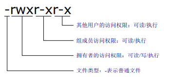
输出信息第一列表示文件访问权限，该示例详细说明
第一个字符是-，表示这是一个普通文件，如果是 b 则表示是块设备，是 c 则表示是字 符设备，是 d 则表示是目录，是 l 则表示是链接文件，p 表示命名管道，s 表示 Socket 文件。
接下来的 9 个字符 rwxr-xr-x，分成三组
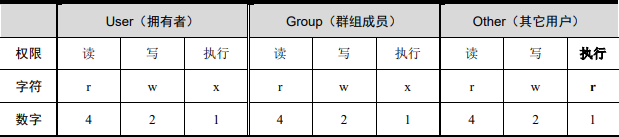
权限字符中，ls -l 结果中，用 r/w/x 表示的则表示拥有相应的权限，用“-”表示的则表 示没有相应的权限，拥有权限的用数字表示结果为“读/写/执行”3 个数字相或得到，如 rwx 可用 7 表示，r-x 可用 5 表示，rwxr-xr-x 则可用 755 表示。
chmod 用于改变或者设置文件/目录的权限。用法：
$chmod [参数] 文件/目录设置或者改变文件/目录的权限，可直接用八进制表示，如将 hello 文件设置为任何人都 可以读写并执行
vmuser@Linux-host: hello$ chmod 777 hello更常用的是用字符方式设定文件/目录的权限，分别用 u/g/o 表示文件的拥有者/组内用 户/其它用户，用 rwx 分别表示读/写/执行权限，用+/-表示增加或去除某种权限。例如，将 hello 文件的其它用户权限可执行属性去掉：
vmuser@Linux-host: hello$ chmod o-x hello如果同时设置 u/g/o，可用 a 表示，例如为 hello 增加全部用户可执行权限：
vmuser@Linux-host: ~$ chmod a+x hello拥有可执行权限的文件，在 Linux 终端下通常呈现为绿色。如果在运行程序的时候遇 到 permission dennied 这样的错误提示，可在终端输入 chmod +x file，为将要运行的程序增 加可执行权限。
3.2.4 网络操作命令
网络配置
ifconfig 命令是 Linux 系统配置网卡的命令工具，可用于查看和更改网络接口的地址和 参数，包括 IP 地址、广播地址、子网掩码和物理地址，也可激活和关闭网卡。需root，用法：
$ifconfig 网络接口 [选项] 地址/参数参数：
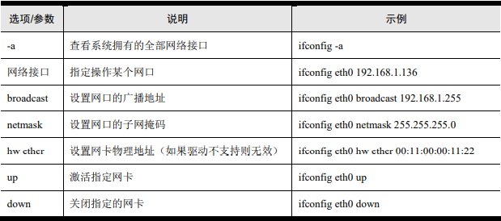
ping 命令
在 Linux 命令行下，可用 ping 命令来检查。用法：
$ping IP 地址如果没有进行特殊的路由设置，通常情况下只能 ping 同网段的主机，不能跨网段 ping 操作。
安装和卸载文件系统
Linux 允许多个文件系统存在于同一个系统中，也允许用户在系统运行中安装内核所支 持的文件系统。例如，将一个 FAT 格式的 U 盘插入到 Linux 系统中。需root
# mount [-参数] [设备名称] [挂载点]mount 命令支持的参数较多
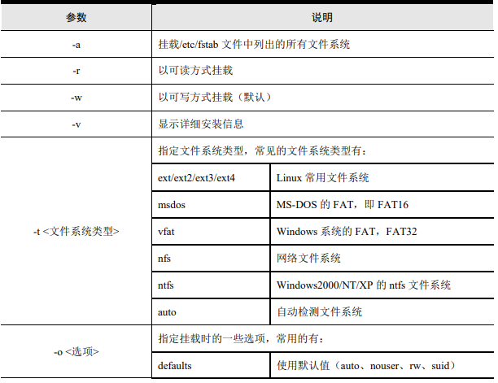
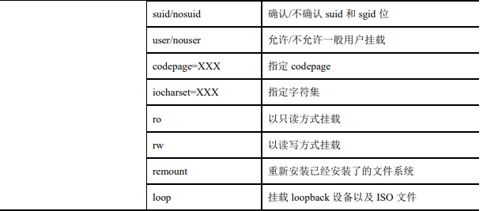
- （1）挂载点必须是一个已经存在的目录；
- （2）如果挂载点非空，则挂载后之前的内容将不可用，卸载后方可用；
- （3）一个挂载点可被多个设备/文件重复挂载，只是后一次挂载将覆盖前一次内容，卸载后可用；
- （4）使用多个-o 参数的时候，-o 只用一次，参数之间用半角逗号隔开。
假如需要在 Linux 系统中使用 FAT 格式的 U 盘，则需要进行挂载，实现文件系统安装：
#mount –t vfat /dev/sda1 /mnt在进行嵌入式 Linux 开发过程中，mount 命令经常被使用，特别是进行 NFS 连接和调试 的时候，通过 NFS 挂载，将远程主机 Linux 的某个共享目录挂载到嵌入式系统本地，当成 本地设备进行操作。NFS 挂载范例：
[root@zlg /]#mount -t nfs 192.168.1.138:/home/chenxibing/lpc3250 /mnt -o nolocknolock 表示禁用文件锁，当连接到一个旧版本的 NFS 服务器时常加该选项。
此外，嵌入式开发中常用的文件系统还有 cramfs、jffs2、yaffs/yaffs2 以及 ubifs 等，特别是用于 NOR Flash 的 jffs2 和用于 NAND Flash 的 yaffs/yaffs2、ubifs 等，在进行系统操作中通常需要对各设备进行挂载或者卸载，需要在挂载的时候指定正确的文件系统类型。挂载yaffs2 分区的命令示例：
#mount -t yaffs2 /dev/mtdblock2 /mnt挂载 ubifs 分区的命令示例：
#mount -t ubifs ubi0:rootfs /mnt
文件系统卸载
当不再需要某个文件系统的时候，可以将其卸载。umount 用于卸载已经挂载的设备或 者文件。用法：
#umount 挂载点如果已经将 U 盘挂载到/mnt 目录下，用完后的卸载命令为：
[root@zlg /]# umount /mnt
使用内核模块和驱动
加载（插入）模块
Linux 是一个具有模块化特性操作系统，允许在内核运行中插入模块或者卸载不再需要 的模块。能够动态加载和卸载模块是 Linux 引以为豪的特性之一，如果某些功能平时用不到， 可以不用编进内核，而采取模块方式编译，在需要的时候再插入内核，不再需要的时候卸载， 这样可以精简内核，提高效率，并提高系统的灵活性。Linux 中最常见的模块是内核驱动， 掌握模块的加载和卸载，也是使用 Linux 必须掌握的方法之一。
通过 insmod 命令可以往正在运行中的内核插入某些模块而无需重启系统。用法：
# insmod [选项] 模块 [符号名称=值]insmod 常用选项介绍
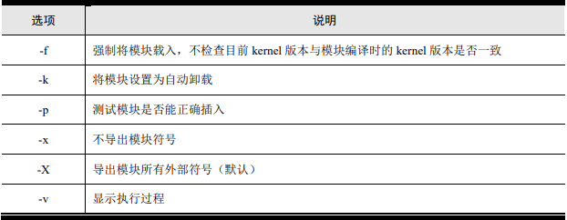
插入和卸载模块需要 root 权限。插入模块比较简单，如需要往系统插入 beep.ko 驱动模 块，可用：
[root@zlg beep]# insmod beepdrv.ko查看系统已经加载的模块
如果想要知道某个模块是否已经插入系统，或者想知道系统加已经载了哪些模块，可用 lsmod 命令查看。Lsmod 命令用法：
vmuser@Linux-host: ~$lsmodlsmod 命令结果实际上就是列出/proc/modules 的内容
卸载驱动模块
当某个内核模块或者驱动不再需要被使用，则可以将其从系统中卸载，以释放所占用的 资源。卸载模块用 rmmod 命令，用法：
# rmmod [选项] 模块rmmod 命令常用可选项
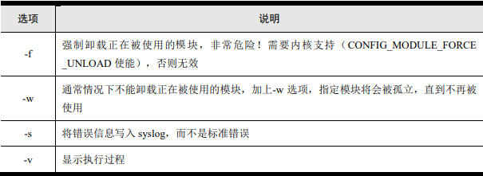
如果一个模块正在被另外一个模块所依赖，或者正在被某个应用程序使用，则一般情况 下无法卸载这个模块。如果内核支持强制卸载模块功能，加上-f 可以卸载，但是不要轻易使 用，否则有可能会带来严重错误。假定系统的 beep.ko 不再需要，卸载命令：
[root@zlg beep]# rmmod beepdrv.ko自动处理可加载模块
前面提到的 insmod/rmmod 分别用于加载和卸载模块，但是每次只能加载/卸载一个模块， 如果一个模块依赖于多个模块，则需要进行多次操作，比较繁琐。modprobe 命令集加载/卸载功能于一身，并且可以自动解决模块的依赖关系，将某模块所依赖的其它模块全部加载。 用法：
# modprobe [选项] 模块 [符号=值]modprobe 也支持很多选项，常用选项如
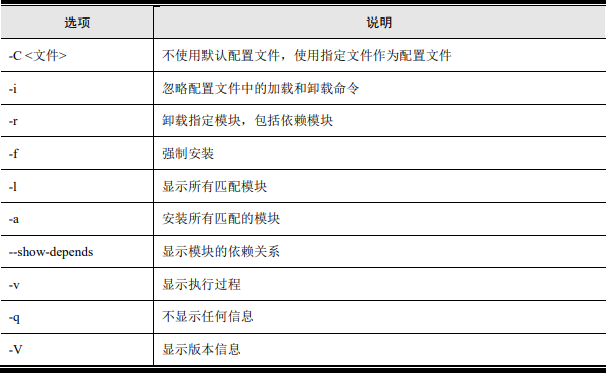
modprobe 处理模块时忽略模块的路径，这要求系统模块和驱动是按照 make modues_install 方式安装的，即模块必须放在/lib/modules/$(uname -r)目录下，并且有正确的 /lib/modules/$(uname -r)/modules.dep 文件，modprobe 根据该文件来寻找和解决依赖关系。
创建设备节点
如果系统不能自动创建设备节点，加载驱动后，则需要为驱动建立对应的设备节点，否则无法通过驱动来操作设备。只有 root 用户才能创建设备节点，命令为 mknod，用法：
#mknod 设备名 设备类型 主设备号 次设备号如需要创建一个字符设备 led，主设备号为 231，次设备号为 0，则命令如下：
#mknod /dev/led c 231 0
3.2.5 重启和关机
重启系统用 reboot 命令，关机用 poweroff 命令，两者都需要 root 权限。
3.2.6 其它命令
临时获取 root 权限
在普通用户权限下，Linux 下很多命令都是不能使用的，一般在/sbin 和/usr/sbin 目录下 的命令，执行都需要 root 权限。sudo 命令则可以临时获取 root 权限，需要输入密码。用法：
$ sudo 命令例如，当前登录用户是普通用户，想挂载一个新的文件系统，则可以这样操作：
$ sudo /sbin/mount [参数]根据发行版的不同，普通用户无法搜索 root 用户的搜索目录，所以最好指定命令所在的绝对路径。
另外，通过普通命令还可操作只有 root 才能操作的文件。假定文件 root.ini 只有 root 用户才能修改，现在普通用户想修改，可以这样操作：
$ sudo vim root.ini- （1）sudo 只能临时获取 root 权限，通常一段时间之内，如 5 分钟之内再次使用 sudo，无需输入密码，超过这段时间则需再次输入密码。
- （2）使用 sudo 命令需要管理员将用户添加到 sudoer 组中，一般在/etc/sudoers 文件中修改。
- 另外 su 命令则是切换到 root 用户，只要不用 exit 退出，将都处在 root 权限下，这样比较危险，一般不推荐使用 su 命令。
文件同步
经常会遇到这样的情形：刚刚修改了某个文件，突然断电，重启后发现刚刚做的修改并没有保存，或者被修改的文件已经损坏。这是由于 Linux 中，对文件的操作都是先保存在缓存中，并没有立即写入磁盘，经系统调度后方可写入磁盘。如果修改了缓存，还没来得及写到磁盘就断电，自然会造成文件改变丢失。
要避免这种情况发生，就是修改文件后，立即强制进行一次文件同步操作，将缓存的内 容写入磁盘，确保文件系统的完整性。能完成这样功能的命令是 sync。只需在关闭文本编 辑器后在 Shell 输入 sync 即可。
文件搜索
find 是 Linux 下很常用的查找命令，功能很强大，用法也很复杂，这里仅仅介绍常用的简单用法。find 命令基本语法：
$find 路径 –选项 其它最常用的是根据文件名来查找，加上-name 参数就可以了，还可以支持通配符，进行模糊搜索。例如只大概知道内核源码“arch/arm”目录下有文件名以 mux 开头的文件，但不知道确切文件名，可用下列命令搜索：
$find arch/arm/ -name mux*.c字符串搜索
grep 是 Linux 系统中一个强大的文本搜索工具，用法很多很复杂，这里也仅仅介绍简单 的常用用法。语法格式：
$grep 选项只要提供查找的关键字，用 grep 命令就可以完成查找。例如，想知道 pcf8563 这个关键字在“arch/arm”目录下哪些地方用到了，可以输入下列命令：
$grep ―pcf8563‖ -R arch/arm关键字最好加上双引号，特别是包含空格的关键字，对于单个关键字倒是可以不用引号。“-R”表示进行递归查找，而不是仅仅在指定的目录下查找。
3.3 Shell文件
Shell 文件是以某种方式将一些命令放在一起得到的文件，常称为 Shell 脚本。Shell 文 件通常以“#!/bin/sh”开始，#!后面指定解释器，如下是一个简单的 Shell 文件的内容：
#!/bin/sh
echo ―hello, I am shell script‖假定此文件名为 a.sh，增加可执行权限后，在 Shell 中即可运行，将在终端打印“hello, I am shell script”字符串。
$chmod +x a.sh
$./a.sh
hello, I am shell script执行 Shell 脚本有多种方式：
（1）点+斜线+文件名，这种方式要求文件必须有可执行权限；
（2）点+空格+文件名，这种方式不要求文件一定具有可执行权限。
（3）sh+空格+文件名，这种方式不要求文件一定具有可执行权限。
（4）source+空格+文件名，这种方式不要求文件一定具有可执行权限。
3.4 Linux环境变量
3.4.1 环境变量
Linux 是一个多用户操作系统，每个用户都有自己专有的运行环境。用户所使用的环境由一系列变量所定义，这些变量被称为环境变量。系统环境变量通常都是大写。
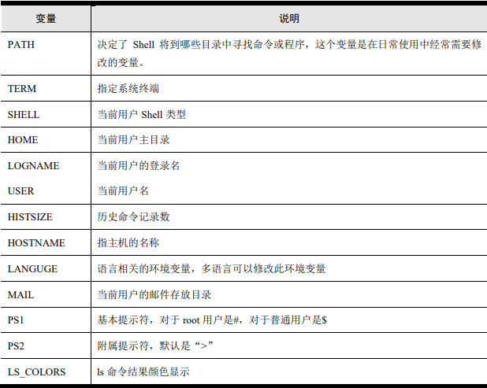
在 Shell 下通过美元符号（$）来引用环境变量，使用 echo 命令可以查看某个具体环境变量的值。例如，查看 TERM 的值：
$echo $TERM使用 env 或者 printenv 命令可以查看系统全部的环境变量设置。
3.4.2 修改环境变量
登录用户可以根据需要修改和设置环境变量。Linux 下修改环境变量既可以在终端通过Shell 命令修改，也可以通过修改系统的配置文件来进行。
（1）通过 Shell 命令设置环境变量，常用于临时设置环境变量，一旦关闭当前终端或者新开一个终端，所设置的环境变量都将丢失。可直接用等号（=）为变量赋值，或者用export命令为变量赋值，用法：
$ 变量=$变量:新增加变量值
$ export 变量=$变量:新增加变量值新增加的变量值既可以放在变量原有值的末尾（$变量:新变量值），也可以放在原有变量值的开头（新变量值:$变量）。
如：
vmuser@Linux-host: ~$ echo $PATH
/usr/lib/qt-3.3/bin:/usr/kerberos/bin:/usr/local/ruby/bin:/opt/mysql5/bin:/usr/lib/ccache:/usr/local/bin:/bin:/usr/bin:/
usr/local/sbin:/usr/sbin:/sbin
[chenxibing@fedora ~]PATH=$PATH:/opt/usr/bin
[chenxibing@fedora ~]echo $PATH
/usr/lib/qt-3.3/bin:/usr/kerberos/bin:/usr/local/ruby/bin:/opt/mysql5/bin:/usr/lib/ccache:/usr/local/bin:/bin:/usr/bin:/
usr/local/sbin:/usr/sbin:/sbin:/opt/usr/bin（2）修改系统配置文件。修改系统配置文件，可以达到永久改变环境变量的目的。修改某个配置文件后，在 Shell 下运行该文件即可使新的设置生效，或者重新登录使用新的变量。运行文件可用“source 文件”的方式操作。通常修改/etc/profile 文件或者/.bashrc（有 的发行版上为/.bash_profile）文件：
- 修改/etc/profile 文件会影响使用本机的全部用户；
- 修改~/.bashrc 则仅仅影响当前用户；
- 推荐修改~/.bashrc 文件。
4.Linux文件系统
4.1 Linux目录结构
Linux 文件系统对文件的管理包括两方面，一方面是文件本身，另一方面是目录管理。先从目录入手，会显得比较直观和更加容易理解一些。
4.1.1 Linux目录树
Linux 整个文件系统以根目录（/）为最顶层目录，下面包含众多和多级其它目录，形成 了一个拓扑结构，整个目录结构看起来就像一棵倒挂着的树，称之为“Linux 目录树”，如图，整个 Linux 有且只有这样一棵树。
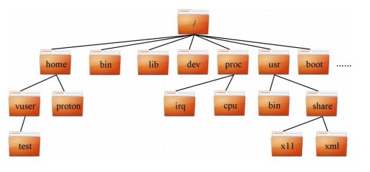
这个目录树实际上是一个虚拟的概念，并不与任何文件、任何介质绑定，也没有容量，甚至连读写规则都没有。只有将某个介质如磁盘或者光驱挂载（mount）到这棵树的某个目录后，这个目录下面才有文件。但是，此时这个目录依旧没有容量的概念，看到的容量仅仅是这个磁盘或者光驱这个设备的容量属性，并不是文件系统的属性。
由于这棵树是虚拟的，没有任何限制，所以很容易进行扩展。
4.1.2 Linux目录树标准
理论上，Linux 目录树的目录结构是可以随意安排的，事实上很多 Linux 系统开发人员也这么做，但这就带来了不同开发人员之间不统一的情况存在，很容易出现混乱。后来这样的问题得到了重视，文件层次标准（FHS，Filesystem Hierarchy Standard）就在这种情况下出台的。FHS 对 Linux 根文件系统的基本目录结构做了比较详细的规定，尽管不是强制标准，但事实上，大部分 Linux 发行版都遵循这个标准。
Linux 目录树下各子目录的简单说明如表
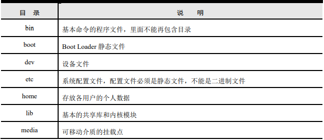
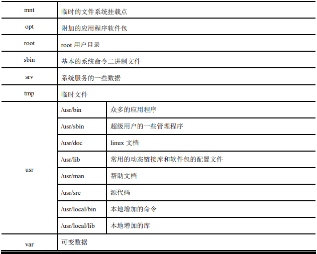
4.2 Linux的文件
4.2.1 Linux文件结构
文件是数据的一种组织形式，是具有文件名的一组相关信息的集合，是文件系统中存储数据的一个命名的对象。Linux 下一切都是文件，无论程序、文档、数据库这样的普通文件，还是链接文件和目录这样的特殊文件，甚至于连硬件设备都用文件来描述。Linux 下所有文件的描述结构都是相同的，包含索引节点和数据。
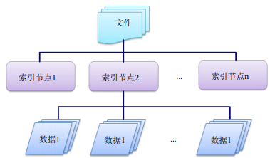
索引节点：又称 I 节点，是 Linux 文件系统用来记录文件信息的一种数据结构，信息包括包括文件名、文件长度、文件权限、存放位置、所属关系、创建和修改时间等。文件系统维护了一个索引节点的数组，每个文件都与索引节点数组中的唯一元素对应，索引节点在数组中的索引号，称为索引节点号。每个文件都有一个索引号与之对应，而一个索引节点号，可以对应多个文件。
数据：文件的实际内容。可以是空的，也可以非常大，并且拥有自己的结构。 一个文件的索引节点、文件大小、属主等信息，在 Shell 下可用 ls 命令加上参数-i 查看
chenxibing@gitserver-zhiyuan:~$ ls -li examples.desktop
785326 -rw-r--r-- 1 chenxibing root 179 2010-10-15 09:07 examples.desktop各信息说明

文件数据信息则需要用相关的编辑器或者软件才能查看。
4.2.2 Linux文件名称
Linux 的文件名保存目录文件中，命名应当遵循以下规则
- 区分大小写；
- 不能以“+”和“-”开头；
- 不能包含< > ；| ` ―‘ $! % &*?\ () []等在 Shell 中有特殊含义的字符；
- 不能包含空格；
- 长度不能超过 255 个字符
Linux 系统中，文件名以点号(.)开始的文件是隐藏文件，用 ls 命令不加参数-a 将看不到在这类文件。“同名”的隐藏文件与非隐藏文件是不同的，如.file 与 file 是两个不同的文件。
4.2.3 文件类型
Linux 系统中的文件可以分为如下几类：普通文件、目录文件、设备文件和符号链接文 件。
普通文件
普通文件又称常规文件，包含各种长度的字符串。常见的 C 程序文件、脚本文件、数据库文件等都是文件。普通文件在 Linux Shell 下用 ls 命令查看，得到的信息中，第一个字 符是“-”。如：
-rw------- 1 chenxibing member 10732 2011-01-08 13:28 .bash_history
目录文件
目录文件是一种特殊文件，利用它可以构成文件系统的分层树形结构。在 Linux Shell下用 ls 命令查看，第一个字符用 d 表示。如：
drwxr-xr-x 3 chenxibing member 4096 2010-11-27 14:02 abing drwxr-xr-x 4 chenxibing member 4096 2010-10-19 14:00 git
设备文件
设备是一种特别文件，除了存放在文件 i 节点中的信息外，它们不包含任何数据。有效地设备文件与相应的设备对应，通过设备文件，可以操作与之对应的硬件设备。
设备文件包括字符设备和块设备文件。字符设备文件按照字符操作设备, 如键盘、终端 等;块设备文件以块为单位操作设备，如磁盘、光盘等。Linux 系统的设备文件都放在/dev 目录下，用 ls –la 命令可以查看各设备的属性：
crw-rw-rw- 1 root root 1, 8 2011-01-08 15:12 random crw-r--r-- 1 root root 10, 135 2011-01-08 15:12 rtc brw-rw---- 1 root disk 8, 0 2011-01-08 15:12 sda brw-rw---- 1 root disk 8, 1 2011-01-08 07:12 sda1输出信息中，以第一个字符用 b 表示的是块设备，用 c 表示的是字符设备。
符号链接文件
链接文件是一种特殊文件，提供对其它文件的参照，它的数据是它所链接的文件的路径名。用 ln 命令可以创建一个文件的软硬链接或者一个目录的软连接。链接文件常用于不同目录下的文件共享。链接文件按在 ls 命令下输出结果中第一个字符为字母 l, 并显示为“文 件->目标”的方式，如链接文件 git 链接到/var/server/repo-git/chenxibing，查看结果为：
lrwxrwxrwx 1 chenxibing root 31 2010-10-22 08:37 git -> /var/server/repo-git/chenxibing
4.3 Linux文件系统
Linux 最初是基于 X86 设计的 ，保存文件的物理设备是磁盘或者磁带。Linux 最初用于管理磁盘文件的文件系统是基于 Minix 的，存在文件管理效率不高的问题；后来在 Minix 的基础上进行了扩展，设计了专门用于 Linux 的 Ext 扩展文件系统（Extended file system），并添加到内核中，并成为了 Linux 事实上的标准文件系统，Linux 的发布和安装都基于 Ext 文件系统。
Ext2 属于非日志型文件系统，而 Ext3/4 文件系统是日志型文件系统。日志型文件系统用独立的日志文件跟踪磁盘内容的变化，比传统文件系统安全。
4.3.1 Ext3文件系统特点
Ext3 从 Ext2 发展而来，并且完全兼容 Ext2 文件系统，且比 Ext2 可靠。在文件大小、数量和文件名方面有如下限制：
- 最大文件大小：2TB；
- 最大文件数量：可变；
- 最长文件名限制：255 字节；
- 最大卷大小：16TB；
- 文件名允许的字符数： 除 NUL 和“/”外的所有字节。
整体上，Ext3 具有下面的一些特点：
1.高可用性
使用了 Ext3 文件系统后，即使在非正常关机后，系统也不需要检查文件系统。即使发生了宕机，也只需要数十秒钟即可恢复 Ext3 文件系统。
2.数据的完整性
Ext3 文件系统能够极大地提高了文件系统的完整性，避免意外宕机对文件系统的破坏。 Ext3文件系统为用户提供了 2 种模式来保证数据的完整性。其中一种是“同时保持文件系统及数据的一致性”模式。如果采用这种方式，用户永远不会看到由于非正常关机而存储在磁盘上的垃圾文件。
3.文件系统的速度
尽管使用 Ext3 文件系统时，有时在存储数据时可能要多次写数据，但是，从总体上看来，Ext3 比 Ext2 的性能还要好一些。因为 Ext3 的日志功能对磁盘的驱动器读写头进行了优化，所以，文件系统整体读写性能并没有降低。
4.数据转换
Ext3 兼容 Ext2，从 Ext2 文件系统转换成 Ext3 文件系统非常容易，只需要简单地键入两条命令即可完成整个转换过程，用户不用花时间备份、恢复、格式化分区等。并且 Ext3 文件系统可以不经任何更改，而直接加载成为 Ext2 文件系统。
5.多种日志模式
Ext3 有多种日志模式，系统管理人员可以根据系统的实际工作要求，在系统的工作速度与文件数据的一致性之间作出选择：
- 一种工作模式是对所有的文件数据及 metadata（定义文件系统中数据的数据，即数据的数据）进行日志记录（data=journal 模式），这种模式数据一致性好；
- 另一种工作模式则是只对 metadata 记录日志，而不对数据进行日志记录，就是所谓的 data=ordered 或者 data=writeback 模式，这种模式工作速度快。
4.3.2 Ext4文件系统特点
Ext4 在 Ext3 的基础上进行了改进，修改了一部分重要的数据结构。Ext4 在性能和可靠性方面都有更好的表现，功能方面也更加丰富。
Ext4 兼容 Ext3，从 Ext3 迁移到 Ext4，无需格式化磁盘或者重装系统。
与 Ext3 相比，Ext4 具有下列特点：
1.支持更大的文件系统和文件
Ext3 支持最大的文件系统是 16TB，Ext4 支持到了 1EB（1,048,576TB， 1EB=1024PB，1PB=1024TB）；Ext3 支持的最大文件是 2TB，而 Ext4 支持到了 16TB。
2.无限数量的子目录
Ext3 只支持 32,000 个子目录，而 Ext4 支持无限数量的子目录。
3.Extents
Ext3 采用间接块映射，当操作大文件时，效率极其低下。比如一个 100MB 大小的文件，在 Ext3 中要建立 25,600 个数据块（每个数据块大小为 4KB）的映射表。而 Ext4 引入了现代文件系统中流行的 extents 概念，每个 extent 为一组连续的数据块，上述文件则表示为“该文件数据保存在接下来的 25,600 个数据块中”，提高了不少效率。
4.多块分配
当写入数据到 Ext3 文件系统中时，Ext3 的数据块分配器每次只能分配一个 4KB 的块，写一个 100MB 文件就要调用 25,600 次数据块分配器，而 Ext4 的多块分配器“multiblock allocator”（mballoc）支持一次调用分配多个数据块。
5.延迟分配
Ext3 的数据块分配策略是尽快分配，而 Ext4 和其它现代文件操作系统的策略是尽可能地延迟分配，直到文件在 cache 中写完才开始分配数据块并写入磁盘，这样就能优化整个文件的数据块分配，与前两种特性搭配起来可以显著提升性能。
6.快速fsck
以前执行 fsck 第一步就会很慢，因为它要检查所有的 inode，而现在 Ext4 给每个组的 inode 表中都添加了一份未使用 inode 的列表，今后 fsck Ext4 文件系统就可以跳过它们而只去检查那些在用的 node 了。
7.日志校验
日志是最常用的部分，也极易导致磁盘硬件故障，而从损坏的日志中恢复数据会导致更多的数据损坏。Ext4 的日志校验功能可以很方便地判断日志数据是否损坏，而且它将Ext3的两阶段日志机制合并成一个阶段，在增加安全性的同时提高了性能。
8.无日志模式（No Journaling）
日志总归有一些开销，Ext4 允许关闭日志，以便某些有特殊需求的用户可以借此提升性能。
9.在线碎片整理
尽管延迟分配、多块分配和 extents 能有效减少文件系统碎片，但碎片还是不可避免会产生。Ext4 支持在线碎片整理，并将提供 e4defrag 工具进行个别文件或整个文件系统的碎片整理。
10.inode 相关特性
Ext4 支持更大的 inode，较之 Ext3 默认的 inode 大小 128 字节，Ext4 为了在 inode 中容纳更多的扩展属性（如纳秒时间戳或 inode 版本），默认 inode 大小为 256 字节。Ext4 还支持快速扩展属性（fast extended attributes）和 inode 保留（inodes reservation）。
11.持久预分配（Persistent preallocation）
P2P 软件为了保证下载文件有足够的空间存放，常常会预先创建一个与所下载文件大小相同的空文件，以免未来的数小时或数天之内磁盘空间不足导致下载失败。 Ext4 在文件系统层面实现了持久预分配并提供相应的 API（libc 中的 posix_fallocate()），比应用软件自己实现更有效率。
12.默认启用 barrier
磁盘上配有内部缓存，以便重新调整批量数据的写操作顺序，优化写入性能，因此文件系统必须在日志数据写入磁盘之后才能写 commit 记录，若 commit 记录写入在先，而日志有可能损坏，那么就会影响数据完整性。Ext4 默认启用 barrier，只有当 barrier 之前的数据全部写入磁盘，才能写 barrier 之后的数据。
4.3.3 其他文件系统
Linux 支持多种文件系统，且同时存在于一个运行的系统中。查看“/proc/filesystems”文件，可以看到系统支持的全部文件系统。
vmuser@Linux-host: ~$ cat /proc/filesystems
nodev sysfs
nodev rootfs
nodev ramfs
nodev bdev
nodev proc
nodev cgroup
nodev cpuset
nodev tmpfs
nodev devtmpfs
nodev debugfs
nodev securityfs
nodev sockfs
nodev pipefs
nodev anon_inodefs
nodev devpts
ext3
ext2
ext4
nodev hugetlbfs
vfat
nodev ecryptfs
fuseblk
nodev fuse
nodev fusectl
nodev pstore
nodev efivarfs
nodev mqueue
nodev rpc_pipefs
nodev binfmt_misc
nodev nfs
nodev nfs4
nodev nfsd可以看到，Linux 支持很多种文件系统，这里不再一一介绍，仅对其中两个个很具有代表性的 proc 文件系统和 sysfs 文件系统进行简单说明。
1.proc 文件系统
proc 是 Linux 系统中的一种特殊文件系统，是内核和内核模块用来向进程发送消息的机 制，只存在与内存中，实际上是一个伪文件系统。用户和应用程序可通过/proc 获得系统的 信息，还可以改变内核的某些参数。/proc 子目录和所包含的内容说明